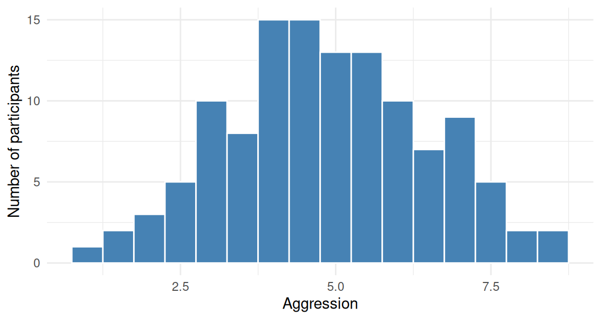
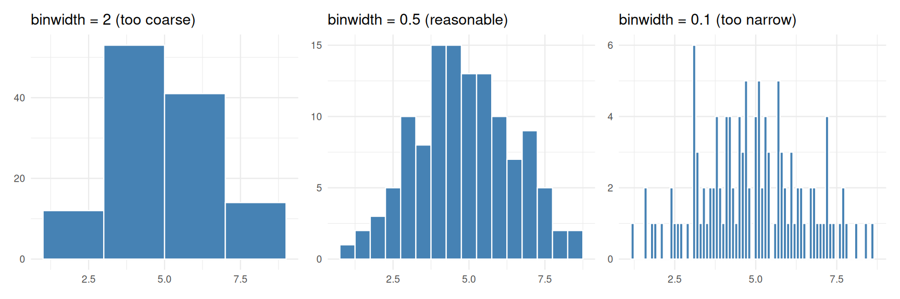
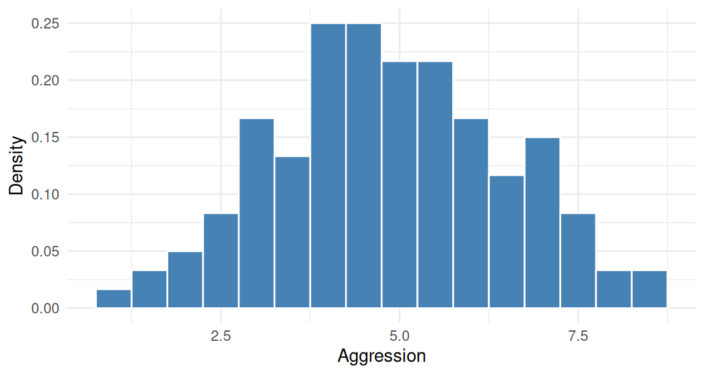
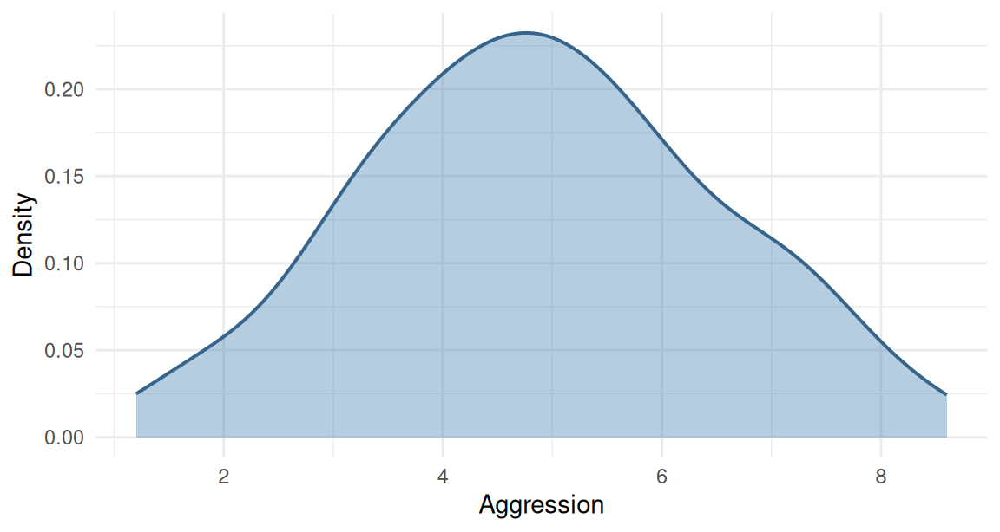
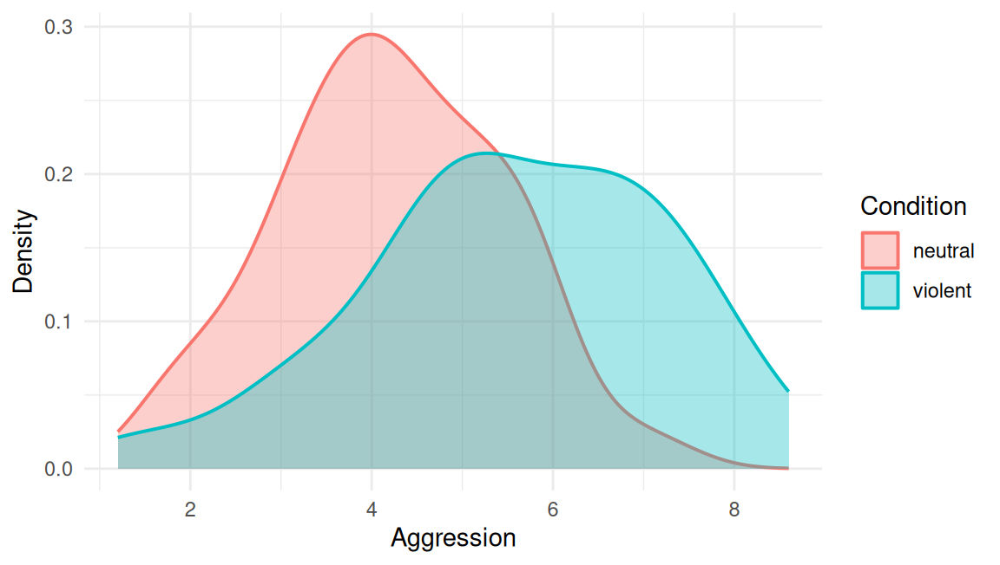
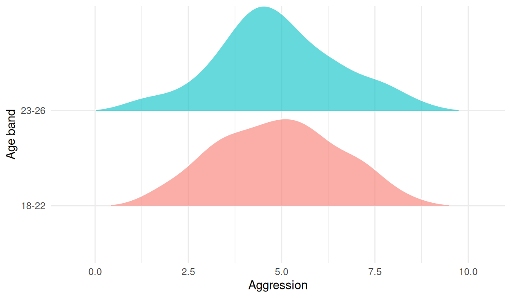
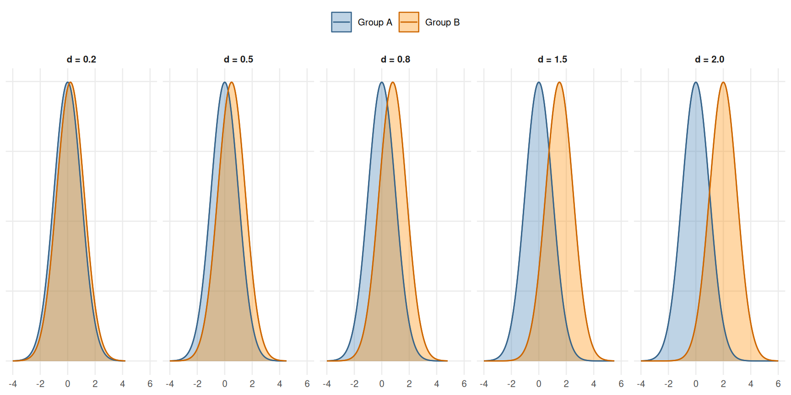
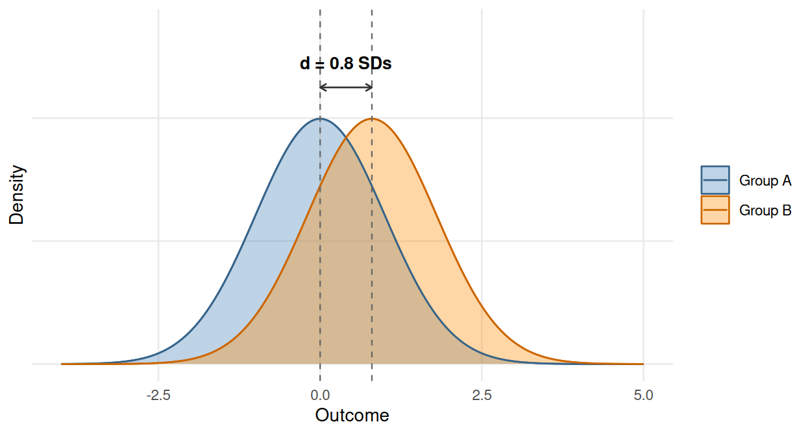

vgames <- read.csv("data/vgames_study.csv")33 Visualizing distributions
This chapter is about visualizing the shape of a single continuous variable. Where Chapter 31 focused on showing means and spread, this chapter focuses on showing the whole distribution: where the values cluster, where they thin out, whether they are symmetric or skewed, whether there are multiple modes, whether outliers sit far from the central mass.
Distribution plots are useful for several reasons. They reveal features that summary statistics like the mean and SD hide. They help diagnose whether a particular analysis is appropriate (a t-test on a heavily skewed outcome is suspect, for instance). They communicate the underlying data to the reader in a way that bar plots and means cannot. And, as we will see in the final section, the visual comparison of two overlapping distributions is a direct intuition pump for standardized effect sizes like Cohen’s d.
We use the vgames_study data throughout.
33.1 Histograms
The most basic distribution plot is the histogram. It divides the range of the variable into bins of equal width, counts the observations in each bin, and shows the counts as adjacent bars.
ggplot(vgames, aes(x = aggression)) +
geom_histogram(binwidth = 0.5, fill = "steelblue",
color = "white") +
labs(x = "Aggression", y = "Number of participants") +
theme_minimal()
The choice of bin width matters. Too few bins (a wide binwidth) smooths over real features of the distribution. Too many bins (a narrow binwidth) shows random noise as if it were structure. The figure below shows the same data with three different bin widths.
p_wide <- ggplot(vgames, aes(x = aggression)) +
geom_histogram(binwidth = 2, fill = "steelblue", color = "white") +
labs(title = "binwidth = 2 (too coarse)", x = NULL, y = NULL) +
theme_minimal(base_size = 9)
p_good <- ggplot(vgames, aes(x = aggression)) +
geom_histogram(binwidth = 0.5, fill = "steelblue", color = "white") +
labs(title = "binwidth = 0.5 (reasonable)", x = NULL, y = NULL) +
theme_minimal(base_size = 9)
p_narrow <- ggplot(vgames, aes(x = aggression)) +
geom_histogram(binwidth = 0.1, fill = "steelblue", color = "white") +
labs(title = "binwidth = 0.1 (too narrow)", x = NULL, y = NULL) +
theme_minimal(base_size = 9)
if (requireNamespace("patchwork", quietly = TRUE)) {
patchwork::wrap_plots(p_wide, p_good, p_narrow, ncol = 3)
} else {
gridExtra::grid.arrange(p_wide, p_good, p_narrow, ncol = 3)
}
A useful rule of thumb is to start with a binwidth that places about 20 to 30 bars across the range of the data, then adjust by eye. There is no objectively correct bin width; the right choice depends on what features of the distribution you want to communicate.
The y-axis of a histogram is “count” by default. Use aes(y = after_stat(density)) to switch to a density y-axis, which scales the histogram so that the total area sums to 1. This is the right choice when you want to overlay theoretical distributions or compare histograms across datasets with different sample sizes.
ggplot(vgames, aes(x = aggression, y = after_stat(density))) +
geom_histogram(binwidth = 0.5, fill = "steelblue",
color = "white") +
labs(x = "Aggression", y = "Density") +
theme_minimal()
The shape is identical to the count histogram; only the y-axis scaling has changed.
33.2 Density plots
A density plot is a smoothed version of a histogram. Instead of binning into discrete bars, it estimates a continuous curve that represents the underlying density of the data. The function geom_density() produces it.
ggplot(vgames, aes(x = aggression)) +
geom_density(fill = "steelblue", alpha = 0.4,
color = "steelblue4", linewidth = 0.7) +
labs(x = "Aggression", y = "Density") +
theme_minimal()
Density plots are useful when the histogram’s binning starts to feel arbitrary. They show the general shape (peaks, tails, skew) without the visual noise of discrete bars. The trade-off is that the smoothing involves a choice (the bandwidth, controlled by bw or adjust), and a poor bandwidth choice can either oversmooth (hiding real features) or undersmooth (showing noise as if it were structure). Same trade-off as the histogram, just with a different name for the parameter.
The clearest situation in which density beats histogram is when you want to overlay multiple groups on the same plot. Histograms get visually crowded when stacked; densities can sit on top of each other with transparency without losing clarity.
33.3 Overlapping density plots
To compare the distributions of a variable across two or more groups, plot the density for each group on the same axes, with semi-transparent fills so both are visible where they overlap.
ggplot(vgames, aes(x = aggression, fill = condition,
color = condition)) +
geom_density(alpha = 0.35, linewidth = 0.7) +
labs(x = "Aggression", y = "Density",
fill = "Condition", color = "Condition") +
theme_minimal()
The visual story is immediately readable: the violent-condition density (one color) is shifted to the right compared to the neutral-condition density (the other color). The shaded overlap shows where the two distributions cover the same values; the non-overlapping tails show where each distribution has data the other does not.
Overlapping density plots are one of the most informative visualizations available for comparing two groups. They show the means (where each curve peaks), the spread (how wide each curve is), the shape (symmetric, skewed, bimodal), and the overlap (how distinguishable the two groups are). Five summary statistics are visible at a glance in one figure.
The same approach works for more than two groups, with one important caveat: if there are too many groups, the layered densities become a mess. Three or four groups is usually the practical maximum for overlapping densities. For more, switch to ridgeline plots (next section).
33.4 Ridgeline plots
A ridgeline plot (also called a “joyplot”, in reference to the album cover for Joy Division’s Unknown Pleasures) shows multiple distributions stacked vertically, with each distribution offset from the next so they can all be seen simultaneously without obscuring each other. It is the right choice when there are many groups to compare.
Ridgeline plots are produced by the ggridges package. Let us first construct an illustrative grouping: bin participants by age into four categories.
vgames$age_bin <- cut(vgames$age,
breaks = c(17, 22, 26, 30, 36),
labels = c("18-22", "23-26",
"27-30", "31-35"))
if (requireNamespace("ggridges", quietly = TRUE)) {
library(ggridges)
ggplot(vgames, aes(x = aggression, y = age_bin,
fill = age_bin)) +
geom_density_ridges(alpha = 0.6, color = "white",
scale = 1.1, rel_min_height = 0.01) +
labs(x = "Aggression", y = "Age band",
fill = NULL) +
theme_minimal() +
theme(legend.position = "none")
} else {
cat("(ggridges not installed; on your machine the figure would show\n")
cat("four overlapping density curves, one per age band, stacked vertically.)\n")
}
Each band of the figure is a density estimate of aggression for participants of that age. Stacking them vertically lets the eye scan from top to bottom and quickly compare how the distribution changes across categories. A clean ridgeline plot can replace five or six small-multiples panels in a single visualization.
The scale argument controls how much the densities overlap vertically; values larger than 1 produce more overlap, smaller values less. The rel_min_height argument hides density tails below a threshold to clean up the plot.
Ridgeline plots are a relatively recent addition to the standard data-visualization toolkit, popularized by Allen, Poggiali, Whitaker, Marshall, van Langen, and Kievit (2021) as part of a broader “raincloud” plot family that combines density, boxplot, and individual-point elements.
33.5 Visualizing standardized effect sizes with overlapping densities
Overlapping density plots are not just descriptive tools; they are the most intuitive visualization available for the standardized effect sizes we have used throughout Section 4. Cohen’s d is essentially a measure of how far apart two distributions are, expressed in standard-deviation units. The visual fingerprint of d is exactly how separated two overlapping densities look.
The figure below shows the same two normal distributions, separated by Cohen’s d values of 0.2, 0.5, 0.8, 1.5, and 2.0.
d_vals <- c(0.2, 0.5, 0.8, 1.5, 2.0)
# Build six panels of two-distribution data
build_panel <- function(d) {
x <- seq(-4, 4 + d, length.out = 400)
rbind(
data.frame(x = x, density = dnorm(x, mean = 0, sd = 1),
group = "Group A"),
data.frame(x = x, density = dnorm(x, mean = d, sd = 1),
group = "Group B")
) |>
mutate(facet = sprintf("d = %.1f", d))
}
grid_df <- do.call(rbind, lapply(d_vals, build_panel))
grid_df$facet <- factor(grid_df$facet,
levels = sprintf("d = %.1f", d_vals))
ggplot(grid_df, aes(x = x, y = density, fill = group, color = group)) +
geom_area(alpha = 0.35, position = "identity") +
geom_line(linewidth = 0.5) +
facet_wrap(~ facet, ncol = 5) +
scale_fill_manual(values = c("Group A" = "steelblue",
"Group B" = "darkorange")) +
scale_color_manual(values = c("Group A" = "steelblue4",
"Group B" = "darkorange3")) +
labs(x = NULL, y = NULL,
fill = NULL, color = NULL) +
theme_minimal(base_size = 9.5) +
theme(legend.position = "top",
axis.text.y = element_blank(),
panel.grid.minor = element_blank(),
strip.text = element_text(face = "bold"))
Reading the figure from left to right: at d = 0.2 the two distributions are almost identical; at d = 0.5 they are visibly distinct but heavily overlapping; at d = 0.8 the overlap is meaningful but the means are clearly separated; at d = 1.5 the overlap is much reduced; at d = 2.0 the distributions are essentially separated, with only a small overlap in the tails. Memorizing this grid is one of the most useful effect-size intuitions a researcher can develop. When a paper reports d = 0.6, you should be able to picture the corresponding amount of overlap without doing any calculation.
The arrow annotation below shows the same idea on a single panel: Cohen’s d is the distance between the means, measured in standard-deviation units.
x_d <- seq(-4, 5, length.out = 400)
df_d <- rbind(
data.frame(x = x_d, density = dnorm(x_d, mean = 0, sd = 1),
group = "Group A"),
data.frame(x = x_d, density = dnorm(x_d, mean = 0.8, sd = 1),
group = "Group B")
)
ggplot(df_d, aes(x = x, y = density,
fill = group, color = group)) +
geom_area(alpha = 0.35, position = "identity") +
geom_line(linewidth = 0.5) +
geom_vline(xintercept = c(0, 0.8), linetype = "dashed",
color = "grey40", linewidth = 0.4) +
annotate("segment", x = 0, xend = 0.8,
y = 0.45, yend = 0.45,
arrow = grid::arrow(ends = "both",
length = unit(0.15, "cm")),
color = "grey20") +
annotate("text", x = 0.4, y = 0.49,
label = "d = 0.8 SDs",
size = 3.5, fontface = "bold") +
scale_fill_manual(values = c("Group A" = "steelblue",
"Group B" = "darkorange")) +
scale_color_manual(values = c("Group A" = "steelblue4",
"Group B" = "darkorange3")) +
labs(x = "Outcome", y = "Density",
fill = NULL, color = NULL) +
coord_cartesian(ylim = c(0, 0.55)) +
theme_minimal(base_size = 10.5) +
theme(panel.grid.minor = element_blank(),
axis.text.y = element_blank())
The dashed vertical lines mark the means of the two distributions. The horizontal arrow between them, in standard-deviation units, is Cohen’s d. The shaded overlap is the part of the two distributions that occupy the same range of outcome values. Pieces of intuition that fall directly out of this picture:
- A small Cohen’s d means a small distance between the means relative to the SD. The means are close compared to the spread of either group.
- A large Cohen’s d means the opposite. The means are well separated relative to the spread of either group.
- The amount of overlap is not the same as the amount of variance explained, but is closely related to it. Roughly, overlap shrinks as d grows.
- Even at d = 2.0, the distributions still overlap. Individual observations from the lower-mean group can exceed the mean of the higher-mean group, just less often. This is why standardized effect sizes do not predict individual-level differences with certainty (recall the discussion in Chapter 27, section 27.5).
When you see Cohen’s d in a paper from now on, look at the grid in figure 33.5 first, find the closest value, and that picture is what the data look like. The figure does much of the interpretive work for you.
33.6 Check your understanding
1. How does the choice of bin width affect a histogram, and what is a reasonable default?
2. What is the relationship between a density plot and a histogram?
3. What information does an overlapping density plot of two groups convey, and what is its practical limit on the number of groups?
4. What does a ridgeline plot show and when is it preferable to an overlapping density plot?
5. How does Cohen’s d relate to the visual overlap of two density distributions?
6. What does the persistent overlap between two distributions at large values of Cohen’s d (such as d = 2.0) tell us about the interpretation of standardized effect sizes?
33.7 References
Allen, M., Poggiali, D., Whitaker, K., Marshall, T. R., van Langen, J., & Kievit, R. A. (2021). Raincloud plots: A multi-platform tool for robust data visualization. Wellcome Open Research, 4, 63. https://doi.org/10.12688/wellcomeopenres.15191.2
Wilke, C. O. (2024). ggridges: Ridgeline plots in ggplot2 [R package]. https://CRAN.R-project.org/package=ggridges